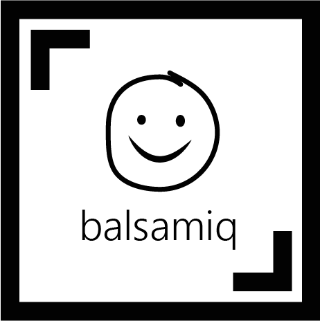
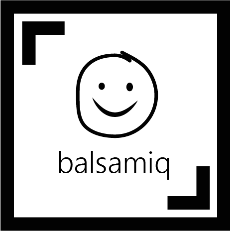

User Experience
For the User Experience section of our curriculum we were asked to redesign a section of the Canada Elections website. We worked on part of this project in a group and part of it individually in order to work through all the steps in the short amount of time we had.


 

The Group
To begin this project we were placed in groups of 4 and asked to develop a content strategy which needed to include stated goals, personas with user stories and empathy maps, a quantitative content audit, competitive and gap analysis, context maps, content models, hierarchy and information architecture as a foundation for the second part of the project. This portion of the project concluded with a report on our findings which we discussed as a group with our instructor before beginning the individual part.
The Individual
As individuals we used the gathered information from our groups to create a style tile, style guide, wireframes, a pitch document and a functioning HTML5/CSS3 prototype to show any interactive patterns in the project. The only requirement for this portion was that what we came up with had to include everything from our Quantitative Content Audit for our chosen page. If we wanted to add or remove something we needed to have group approval and if more than one group member were doing the same page we had to both include or exclude the idea in question.